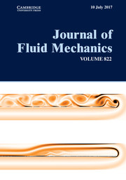

- R. Raj, A. Thiruthumal and A. Pothérat
"Detecting Turbulent Patterns in Particulate Pipe Flow by Streak Angle Visualization"
ArXiv preprint (2024)
- B. Vincent, D. Henry, A. Kumar, V. Botton, A. Pothérat and S. Miralles
"Phenomenology of laminar acoustic streaming jets"
ArXiv preprint (2024) - R. Agrawal, M. Holdsworth and A. Pothérat
"Regimes of rotating convection in an experimental model of the Earth's tangent cylinder"
ArXiv preprint (2024) - A. Kumar and A. Pothérat
"Suppressing instabilities in mixed baroclinic flow using an actuation based on receptivity"
ArXiv preprint (2023) - A. Pothérat and L. Zhang
"Dean flow and vortex shedding in a three-dimensional 180 degrees sharp bend"
ArXiv preprint (2018)
- A. Pothérat and S. Horn
"Seven decades of exploring planetary interiors with rotating convection experiments",
accepted for publication in C.R. Phys. 25, S3, Special issue "Geophysical and Astrophysical Fluid Dynamics in the Laboratory" (2024): - A. Pothérat,
"MHD turbulence at low Rm: the role of boundaries",
Magnetohydrodynamics, 48 (1), 13-23 (2012)
http://mhd.sal.lv/contents/2012/1/MG.48.1.3.R.html,
- S. Lalloz, A. Pothérat, L. Davoust and F. Debray
"Alfven waves at low magnetic Reynolds number: transitions between diffusion, dispersive Alfvén waves and nonlinear propagation"
J. Fluid Mech. 1003, A19 (2025) -
A. Pothérat, K. Aujogue and F. Debray
"Magnetic Taylor-Proudman Constraint Explains Flows into the Tangent Cylinder",
Phys. Rev. Lett. 133, 184101 (2024) Supplemental Material
Research news: How Earth’s Magnetic Field Influences Flows in the Planet's Core
- B. Vincent, S. Miralles, D. Henry , V. Botton and A. Pothérat
"Experimental study of a helical acoustic streaming flow",
Phys. Rev. Fluids 8, 024191 (2024) - Christopher J. Camobreco, Alban Pothérat and Gregory J. Sheard
"Subcritical transition to turbulence in quasi-two-dimensional shear flows",
J. Fluid Mech. 963 R3 (2023) - C.J. Camobreco, A. Pothérat, and G.J. Sheard
"Stability of pulsatile quasi-two-dimensional duct flows under a transverse magnetic field",
Phys. Rev. Fluids 6 (5), 053903 (2021)
- L.Chen, A. Pothérat M.-J. Ni and R. Moreau
"Direct numerical simulation of quasi-two-dimensional MHD turbulent shear flows",
J. Fluid Mech. 915, A130 (2021)
- C.J. Camobreco, A. Pothérat, and G.J. Sheard
"Transition to turbulence in quasi-two-dimensional MHD flow driven by lateral walls",
Phys. Rev. Fluids 6 (1), 013901 (2021)
- C.J. Camobreco, A. Pothérat, and G.J. Sheard
"Subcritical route to turbulence via the Orr mechanism in a quasi-two-dimensional boundary layer",
Phys. Rev. Fluids 5 (11), 113902 (2020)
- B. Moudjed, A. Pothérat and M. Holdsworth
"PIV measurements of pressure and velocity fields in the plane MHD-Couette flow",
Exp. Fluids 61, 255 (2020)
- S. Singh, A. Pothérat, C.C.T. Pringle, R.J Bates and M. Holdsworth
"Simultaneous Eulerian-Lagrangian velocity measurements of particulate pipe flow in transitional regime",
Rev. Sci. Intrum. 91, 095110 (2020)
- J. Brons, P.J Thomas and A. Pothérat
"Mean flow Anisotropy without waves in rotating turbulence",
J. Fluid Mech. 889, A37 1-18 (2020)
- J. Brons, P.J. Thomas and A. Pothérat
"Transition between advection and propagation of inertial waves in rotating turbulence",
J. Fluid Mech. 886, A22 1-21 (2020)
- A. Kumar and A. Pothérat
"Mixed baroclinic convection in a cavity",
J. Fluid Mech. 885, A40 1-31 (2020)
- A. Rouquier, A. Pothérat and C.C.T. Pringle
"An instability mechanism for particulate pipe flow",
J. Fluid Mech. 870, 247-265 (2019)
- G. Launay , T. Cambonie, D. Henry, A. Pothérat and V. Botton
"Transition to chaos in an acoustically-driven cavity flow",
Phys. Rev. Fluids 4, 044401 (2019)
-->
- O. Cassells, T. Vo, A. Pothérat and G. Sheard
"From three-dimensional to quasi-two-dimensional: Linear transient growth in MHD duct flows",
J. Fluid Mech. 861, 382-406 (2019),
- N. Baker, A. Pothérat, L.Davoust and F. Debray
"Inverse and direct energy cascades in Three-Dimensional Magnetohydrodynamic turbulence at low Magnetic Reynolds Number",
Phys. Rev. Lett. 120, 224502 (2018)
- K. Aujogue, A. Pothérat, B. Sreenivasan and F. Debray
"Experimental study of the convection in a rotating tangent cylinder",
J. Fluid Mech. 843, 355-381 (2018)
- A. Pothérat and R. Klein,
"Do static magnetic fields enhance turbulence at low magnetic Reynolds number?",
Phys. Rev. Fluids, 2 (6), 063702 (2017)
-
A. Sapardi, W. Hussam, A. Pothérat and G. Sheard

"Linear stability of confined flow around a 180-degree sharp bend",
J. Fluid Mech. 822, 813-847 (2017)
- N. Baker, A. Pothérat, L.Davoust, F. Debray and , R. Klein
"Controlling the dimensionality of low-Rm MHD turbulence experimentally",
Exp. Fluids 58 (7):79 (2017)
- T. Vo, G. Sheard and A. Pothérat,
"Linear stability of horizontal, laminar fully developed, quasi-two-dimensional liquid metal duct flow under a transverse magnetic field and heated from below" ,
Phys. Rev. Fluids 2 (3) 033902 (2017)
- K. Aujogue, A. Pothérat, F. Debray, I. Bates and B. Sreenivasan
"Little Earth Experiment: an instrument to model planetary cores" ,
Rev. Sci. Instrum. 87 (8) 084502 (2016)
- K. Aujogue, A. Pothérat and B. Sreenivasan,
"Onset of plane magnetoconvection at low Ekman number",
Phys. Fluids 27 (10) 106602 (2015)
- A. Pothérat and K. Kornet,
"The decay of Wall-bounded MHD turbulence at Low Rm",
J. Fluid Mech. 783, 605-636 (2015)
- N. Baker, A. Pothérat and L. Davoust,
"Dimensionality, Secondary flows and Helicity in Low-Rm MHD vortices",
J. Fluid Mech. 779, 325-350, (2015)
- K. Kornet and A. Pothérat,
"A method for spectral DNS of Low-Rm channel flows based on the least dissipative modes",
J. Comput. Phys. 298, 266-279 (2015)
-
R. Low and A. Pothérat,
"Bounds on the attractor dimension for low-Rm magnetohydrodynamic channel flow with parallel magnetic field",
Phys. Rev. E 91 (5) 053022 (2015)
-
A. H. A. Hamid, W.K. Hussam, A. Pothérat and G.J. Sheard,
"Spatial evolution of a quasi-two-dimensional Karman vortex street subjected to a strong uniform magnetic field",
Phys. Fluids 27 (5) 053602 (2015)
- A. Pothérat and R. Klein,
"Why, how and when MHD turbulence at low Rm becomes three-dimensional",
J. Fluid Mech. 761, 168-205, (2014)
- A. Pothérat, F. Rubiconi, Y. Charles, and V. Dousset,
"Direct and inverse pumping in flows with homogeneous and non-homognenous swirl",
EPJ E (European Physical Journal), 36 (8), 94 (2013)
- L. Zhang and A. Pothérat,
"The influence of geometry on the two and three-dimensional dynamics of the flow in a 180^o sharp bend",
Phys. Fluids 25 (5) 053605, (2013)
- A. Alferenok, A. Pothérat, and U. Luedtke,
"Optimal Magnet systems for Lorentz force velocimetry in low conductivity fluids",
Meas. Sci. Tech., 24 (6) 065303, (2013)
doi:10.1088/0957-0233/24/6/065303
- A. Pothérat,
"Three-dimensionality in quasi-two dimensional flows: recirculations and barrel effects",
EPL (Europhys. Lett.), 98 (6), 64003 (2012)
- A. Dousset and A. Pothérat,
"Characterisation of the flow around a truncated cylinder in a duct in a spanwise magnetic field",
J. Fluid Mech., 691, 341-367 (2012)
- A. Pothérat and J.-P. Schweitzer,
"A shallow water model for magnetohydrodynamic flows with turbulent Hartmann layers",
Phys. Fluids, 23 (5), 055108 (2011)
- A. Pothérat and V. Dymkou,
"Direct Numerical Simulation of Low Rm MHD turbulence based on the least dissipative modes",
J. Fluid Mech. , 655, 174-197 (2010)
- O. Andreev, A. Pothérat and A. Thess,
"Generation of liquid metal structures of high aspect ratio by application of an AC magnetic field",
J. Appl. Phys. , 107 (12), 124903 (2010)
- V. Dousset and A. Pothérat ,
"Formation mechanism of hairpin vortices in the wake of a truncated cylinder in a duct",
J. Fluid Mech. , 653, 519-536 (2010)
- R. Klein and A. Pothérat,
"Appearance of three-dimensionality in wall-bounded MHD flows" ,
Phys. Rev. Lett. , 104 (3), 034502 (2010)
- V. Dymkou and A. Pothérat,
"Spectral methods based on the least dissipative modes for wall bounded MHD flows",
J. Theor. Comp. Fluid Dyn., 23 (6), 535-555 (2009)
- R. Klein, A. Pothérat and A. Alferjonok,
"Experiment on an electrically driven, confined vortex pair",
Phys. Rev. E, 79 (1), 016304 (2009)
- V.Dousset and A. Pothérat,
"Numerical simulation of a cylinder wake under strong axial magnetic field",
Phys. Fluids, 20 (1), 017104 (2008)
- A. Pothérat,
"Quasi two-dimensional perturbations in duct flows with a transverse magnetic field",
Phys. Fluids, 19 (7), 074104 (2007)
- A. Pothérat and T. Alboussière,
"Bounds on the Attractor dimension for Low-Rm wall bound MHD turbulence",
Phys. Fluids, 18 (12), 125102 (2006)
- A. Pothérat, J. Sommeria and R. Moreau,
"Numerical simulations of an effective 2d model for MHD flows",
J. Fluid Mech., 534, 115-143 (2005)
- A. Pothérat and T. Alboussière,
"Mathematical estimates for the size of the small scales in low-Rm MHD Turbulence",
Magnetohydrodynamics, 39 (3), 227-234 (2003)
http://mhd.sal.lv/contents/2003/3/p229.html
- A. Pothérat and T. Alboussière,
"Attractor dimensions small scales and anisotropy in low-Rm MHD Turbulence",
Phys. Fluids, 15 (10), 1370-1380 (2003)
- P.A. Davidson and A. Pothérat,
"A note on Bodewadt-Hartmann layers" ,
Eur. J. Mech./B, 21 (5), 541-559 (2002)
- A. Pothérat, J. Sommeria and R. Moreau,
"Effective boundary conditions for MHD flows with thin Hartmann layers",
Phys. Fluids, 14 (1), 403-410 (2002)
- A. Pothérat, J. Sommeria and R. Moreau,
"An effective 2d model for MHD flows with transverse magnetic field",
J. Fluid Mech, 424, 75-100 (2000)
- A. Pothérat, J. Sommeria and R. Moreau,
"2d model for MHD flows",
C.R. Acad. Sci., t328, Série IIb, 1229-1234 (2000)
- A. Pothérat, K. Aujogue and R. Agrawal
"Quasi-two-dimensionality and the Magnetic Taylor-Proudman constraint in Rotating Magneto-Convection",
18th Eurmomech Turbulence Conference, September 4-8, 2023, Valencia, Spain
book of abstracts p 127, pdf - R. Raj, A. Pothérat and C. Pringle
"Effect of neutrally buoyant particles on transitional pipe flow characteristics",
18th Eurmomech Turbulence Conference, September 4-8, 2023, Valencia, Spain
book of abstracts p 199, pdf - S. Lalloz, A. Pothérat, L. Davoust and F. Debray
"Characterisation of confined Alfven waves at low magnetic Reynolds number",
18th Eurmomech Turbulence Conference, September 4-8 2023, Valencia, Spain
book of abstracts p 283, pdf - A. Pothérat
"Topological constraints in quasi-2D flows and models of planetary cores",
th UKMHD meeting, Leeds, May 10-14 (2023)
Keynote talk, pdf - A. Pothérat, K. Aujogue and R. Agrawal
"Magneto-Rotating Convection in a Tangent Cylinder and the Magnetic Taylor-Proudman Constraint",
American Geophysical Union meeting (2022)
Poster NG22C-0373 - A. Pothérat, K. Aujogue, R. Agrawal and Francois Debray
"Rotating Magneto-Convection in a Tangent Cylinder",
INI Sattelite meeting (2022)
- A. Pothérat and A. Kumar
"Towards the suppression of defects in casting with receptivity-based actuation",
China EPM (2022)
Invited talk - R. Agrawal, A. Pothérat and M. Holdsworth
"Experimental characterization of the flow inside a rotating tangent cylinder",
14th European Fluid Mechanics Conference, Athens, September 13-16 (2022)
Paper 0309 pdf - B. Vincent, S. Miralles, V. Botton, D. Henry, H.Ben Hadid, A. Kumar, and A. Pothérat
"Experimental study of a helix-shaped flow driven by ultrasounds",
14th European Fluid Mechanics Conference, Athens, September 13-16 (2022)
Paper 0112 pdf - S. Lalloz, A. Pothérat, L. Davoust and F. Debray
"Experiment on Electrically driven Alfven waves at low magnetic Reynolds number",
14th European Fluid Mechanics Conference, Athens, September 13-16 (2022)
Paper 0172 pdf - S.T. Booth, P.J. Thomas and A. Pothérat
"The transient formation of bounded columns in low Reynolds rotating flow.",
14th European Fluid Mechanics Conference, Athens, September 13-16 (2022)
Paper 0606 pdf - A. Pothérat and K. Aujogue
"Quasi-static Magnetoconvection in a Rotating Tangent Cylinder",
14th European Fluid Mechanics Conference, Athens, September 13-16 (2022)
Paper 0797 pdf - C.Camobreco, A. Pothérat and G. Sheard
"Subcritical transitions to turbulence; the role of the adjoint",
23rd Australasian Fluid Mechanics Conference, Sydney December 4-8 (2022)
Paper 34 pdf - G. Bermudez and A. Pothérat
"A theory of dissipative Alven waves in a bounded domain",
25th International Congress on Theoretical and Applied Mechanics, Milan (Online), August 22-27 (2020+1)
pdf - B. Moudjed and A. Pothérat
"Experimental investigation of the transition to turbulence in the plane magnetohydrodynamic Couette flow",
25th International Congress on Theoretical and Applied Mechanics, Milan (Online), August 22-27 (2020+1)
pdf - A. Kumar and A. Pothérat
"Stability of mixed baroclinic convection in a nearly semi-circular geometry",
25th International Congress on Theoretical and Applied Mechanics, Milan (Online), August 22-27 (2020+1)
pdf - A. Rouquier, A. Kumar and A. Pothérat
"Quasi-static magneto-hydrodynamic convection in cylinder",
25th International Congress on Theoretical and Applied Mechanics, Milan (Online), August 22-27 (2020+1)
pdf - A. Rouquier, A. Pothérat and C. Pringle
"Quasi-static magneto-hydrodynamic convection in a rotating cylinder",
10th Conference on Computational Physics, Covcentry (Online), August (2021)
conference link, pdf - S. Lalloz, A. Pothérat, L. Davoust and F. Debray
"Electrically driven Alfven waves investigation",
10th Electromagnetic Processing of Materials Conference, Riga (Online), June 13-17 (2021)
pdf - J. Brons, A. Pothérat, and P.J. Thomas
"Anitostropy without waves in rotating turbulence",
17th EUROMECH Turbulence Conference, Milan, September 3-6 (2019)
- A. Kumar and A. Pothérat
"Subcritical and supercritical transitions for stratified fluid in a nearly semicircular pool",
17th EUROMECH Turbulence Conference, Milan, September 3-6 (2019)
- G. Launay, D. Henry, T. Cambonie, V. Botton and A. Pothérat, S. Mirales and H. Ben Hadid
"On the dynamics of an acoustically-driven cavity flow",
8th Symposium on on Bifurcations and Instabilities in FluidDynamics, 16-19 July 2019, Limerick,Ireland
Paper 224, conference link - A. Pothérat
"Rotating magnetoconvection from planetary cores to laboratory exeriments", Opening Keynote lecture,
Proceedings of the 11th International PAMIR Conference on Fundamental and Applied MHD, Reims, July 1-5, p32-36 (2019)
pdf - N. Baker, A. Pothérat, L. Davoust and F. Debray
"Direct and Inverse cascades in three-dimensional MHD turbulence at low Rm",
Proceedings of the 11th International PAMIR Conference on Fundamental and Applied MHD, Reims, July 1-5, p92-98 (2019)
pdf - N. Baker, A. Pothérat and L. Davoust, and F. Debray
"Inverse and direct energy cascade in 3D MHD turbulelnce at low-Rm",
Proceedings of the 12th EUROMECH Fluid Mechanics Conference, Vienna, September 10–13 (2018)
conference link, pdf - B. Moudjed, A. Pothérat and M. Holdsworth,
"Experimental investigation of the transition to turbulence in the Plane Magnetohydrodynamic (MHD) Couette flow",
Proceedings of the 12th EUROMECH Fluid Mechanics Conference, Vienna, September 10–13 (2018)
conference link, pdf - S. Singh, A. Pothérat, C. Pringle and I. bates
"Experimental study of transition to turbulence in particulate pipe flow",
Proceedings of the 12th EUROMECH Fluid Mechanics Conference, Vienna, September 10–13 (2018)
conference link, pdf - A. Kumar and A. Pothérat
"Linear stability of stably stratified flow in a curved geometry"
Proceedings of the 12th EUROMECH Fluid Mechanics Conference, Vienna, September 10–13 (2018)
conference link, pdf - J. Brons, P. Thomas and A. Pothérat
"A mechanism for the growth of anisotropy in rotating turbulence"
Proceedings of the 12th EUROMECH Fluid Mechanics Conference, Vienna, September 10–13 (2018)
conference link, pdf - N. Baker, A. Pothérat, L. Davoust, and F. Debray
"The dynamics of partly 2D/Partly 3D turbulence: and investigation in the low-Rm MHD Framework",
16th EUROMECH Turbulence Conference, Stockholm, August 21-24 (2017), Paper 28891
conference link, pdf - J. Brons, P. Thomas and A. Pothérat
"On the formation of columnar structures in a rotating turbulent flow",
16th EUROMECH Turbulence Conference, Stockholm, August 21-24 (2017), Paper 28585
conference link, pdf -
O. Cassels, T. Vo, A. Pothérat and G. Sheard,
From Linear to nonlinear: transient growth in confined magnetohydrodynamic flows ,
In Progress in Applied CFD - CDF17,2, pp831-838, SINTEF Academic Press (2017),
The 12th International Conference on CFD in Oil & Gas, Metallurgical and Process Industries SINTEF, Trondheim, NORWAY, May 30th - June 1st, 2017
ISBN:978-82-536-1544-8 https://www.sintefbok.no/book/download/1119 pdf -
T. Vo, A. Pothérat and G. Sheard,
"Linear Stability of Quasi-two-dimensional Liquid Metal Duct Flow Subjected to a Transverse Magnetic Field and Vertical Temperature Stratification" ,
In The 20th Australasian Fluid Mechanics Conference Proceedings, paper 550, Eds: G. Ivey, T. Zhou, N. Jones & S. Draper, Pub: Australasian Fluid Mechanics Society,
The 20th Australasian Fluid Mechanics Conference, The University of Western Australia, Perth, WA, Australia, 5-8 December (2016).
https://www.sintefbok.no/book/download/1119 pdf - K. Aujogue, B. Sreeninivasan, F. Debray and A. Pothérat,
"A new apparatus to study and model convection inside the Earth tangent cylinder",
Proceedings of the 11th EUROMECH Fluid Mechanics Conference, Seville, September 12–16 (2016)
Paper 0605, http://www.efmc11.org/download/com/com_0605_53PG3C.pdf - N. Baker, A. Pothérat and L. Davoust,
"Dimensionality and secondary flows in low-Rm vortices",
Proceedings of the 11th EUROMECH Fluid Mechanics Conference, Seville, September 12–16 (2016)
Paper 0547, http://www.efmc11.org/download/com/com_0547_U31V43.pdf - N. Baker, A. Pothérat and L. Davoust,
"The dynamics of 2D/3D turbulence: an experimental study in the low-Rm Framework",
Proceedings of the 11th EUROMECH Fluid Mechanics Conference, Seville, September 12–16 (2016)
Paper 0458, http://www.efmc11.org/download/com/com_0458_U31V43.pdf - A. Pothérat and R. Klein,
"Static magnetic fields enhance turbulence",
Proceedings of the 11th EUROMECH Fluid Mechanics Conference, Seville, September 12–16 (2016)
Paper 0591, http://www.efmc11.org/download/com/com_0591_53PG3C.pdf - J. Brons, P. Thomas and A. Pothérat
"On the formation of columnar structures in rotating turbulent flows",
Proceedings of the 11th EUROMECH Fluid Mechanics Conference, Seville, September 12–16 (2016)
Paper 0292, http://www.efmc11.org/download/com/com_0292_2B4N9B.pdf -
A. Rouquier, C. Pringle and A. Pothérat,
"Numerical Study of the transition to turbulence in particulate pipe flow" ,
Proceedings of the XXIVth International Congress on Theoretical and Applied Mechanics (ICTAM), Montreal, August 21-26 (2016)
Paper PO.FM07-1.12.128, conference link, pdf
- N. Baker, A. Pothérat and L. Davoust,
"Dimensionality and secondary flows in low-Rm vortices",
Proceedings of the 10th International PAMIR Conference on Fundamental and Applied MHD, Cagliari, June 20–24, p92-96 (2016)
ISBN: 978-88-90551-93-2, pdf - N. Baker, A. Pothérat, L. Davoust, and F. Debray
"Transition between two and three-dimensional dynamics in low-Rm MHDturbulence",
Proceedings of the 10th International PAMIR Conference on Fundamental and Applied MHD, Cagliari, June 20–24, p117-121 (2016)
ISBN: 978-88-90551-93-2, pdf - A. Pothérat and R. Klein,
"Can magnetic fields enhance turbulence ?",
Proceedings of the 10th International PAMIR Conference on Fundamental and Applied MHD, Cagliari, June 20–24, p188-192 (2016)
ISBN: 978-88-90551-93-2, pdf - A. Pothérat and K. Kornet,
"The decay of wall-bounded MHD turbulence at low-Rm",
Proceedings of the 10th International PAMIR Conference on Fundamental and Applied MHD, paper 122, Cagliari, June 20–24, p193-197 (2016)
ISBN: 978-88-90551-93-2, pdf - K. Aujogue, B. Sreeninivasan, F. Debray and A. Pothérat,
"Onset of rotating Magneto-convection in the Earth Tangent Cylinder" Proceedings of the 10th International PAMIR Conference on Fundamental and Applied MHD, Cagliari, June 20–24, p697-701 (2016)
ISBN: 978-88-90551-93-2, pdf - K. Aujogue, B. Sreeninivasan and A. Pothérat,
"Little Earth Experiment: a model to study the flow in the Earth tangent cylinder",
European Geophysical Union General Assembly Conference Abstracts p. 14822, Vienna, April 17-22 (2016)
http://adsabs.harvard.edu/abs/2016EGUGA..1814822A, pdf - K. Aujogue, B. Sreeninivasan, F. Debray and A. Pothérat,
"An experimental model for magnetoconvection in the Earth tangent cylinder",
American Geophysical Union Fall meeting paper 74975, San Francisco, December 14-18 (2015)
https://agu.confex.com/agu/fm15/meetingapp.cgi/Paper/74975, pdf - Azan M. SAPARDI, Wisam K. HUSSAM, Alban Pothérat and Gregory J. Sheard
"Influence of a strong spanwise magnetic field on the quasi-2D MHD flow in a 180 degrees sharp bend ",
Proceedings of the Eleventh International Conference on Computational Fluid Dynamics in the Minerals and Process Industries
Eds: C.B. Solnordal, P. Liovic, G.W. Delaney, S.J. Cummins, M.P. Schwarz & P.J. Witt, Pub: CSIRO, Australia, ISBN: 978-1-4863-0620-6, 161NG.
Melbourne, Australia, 7-9 December 2015. pdf
- A. Pothérat,
"Quasi-static MHD turbulence between two and three dimensions",
keynote lecture, Proceedings of the 8th EPM Conference, Cannes, October 12-16 (2015),
ISBN 978-2-9953861-0-1, pp207-210, pdf
- K. Kornet and A. Pothérat,
"The decay of wall bounded MHD turbulence at low Rm",
15th EUROMECH Turbulence Conference, Delft, August 25-28 (2015), Paper 363
http://www.etc15.nl/proceedings/proceedings/documents/363.pdf, pdf - N. Baker, A. Pothérat, L. Davoust and F. Debray,
"The 2D/3D dynamics of wall-bounded Low-Rm Magnetohydrodynamic turbulence",
15th EUROMECH Turbulence Conference, Delft, August 25-28 (2015), Paper 307
http://www.etc15.nl/proceedings/proceedings/documents/307.pdf, pdf
- A. Sapardi, W. Hussam, A. Pothérat, G.J. Sheard,
"Three-dimensional Linear Stability Analysis of the Flow around a Sharp 180 degrees Bend",
Proceedings of the 19th Australasian Fluid Mechanics Conference, RMIT University, Melbourne, December 8-11 (2014),
Eds: H. Chowdhury & F. Alam, Pub: Australasian Fluid Mechanics Society, ISBN: 978-0-646-59695-2, paper 222
- A Sapardi, W Hussam, A Potherat, G.J Sheard,
"Quasi-Two-Dimensional MHD Duct Flow around a 180-Degree Sharp Bend in a Strong Magnetic Field",
Proceedings of the 19th Australasian Fluid Mechanics Conference, RMIT University, Melbourne, December 8-11 (2014)
Eds: H. Chowdhury & F. Alam, Pub: Australasian Fluid Mechanics Society, ISBN: 978-0-646-59695-2, paper 223
- K. Kornet and A. Pothérat,
"A new spectral method for Direct Numerical Simulations of MHD channel flows",
10th EUROMECH Fluid Mechanics Conference, Copenhagen, September 14th-18th (2014)
pdf
- N. Baker, L. Davoust and A. Pothérat,
"The 2D/3D dynamics of wall-bounded low-Rm magnetohydrodynamic (MHD) turbulence",
10th EUROMECH Fluid Mechanics Conference, Copenhagen, September 14th-18th (2014)
pdf
- V. Botton, B. Moudjed, D. Henry, H. Ben Hadid and A. Pothérat,
"Acoustic streaming jets in liquids",
4th Joint US-European Fluids Engineering Summer Meeting, Chicago, August 3-7 (2014))
Paper No. FEDSM2014-22042, pp. V01BT14A014, (8 pages), doi:10.1115/FEDSM2014-22042 - K. Kornet and A. Pothérat,
"Spectral Direct Numerical Simulations of low Rm MHD channel flows based on the least dissipative modes",
Proceedings of the 9th International PAMIR Conference on Fundamental and Applied MHD, vol I, 284-290, Riga (2014)
http://pamir.sal.lv/2014/index.php?nav=proceedings , pdf
- N. Baker, A. Pothérat, L. Davoust and F. Debray,
"Experimental study of forced and free decaying wall bounded MHD Turbulence, at low Rm",
Proceedings of the 9th International PAMIR Conference on Fundamental and Applied MHD, Vol I, 185-189, Riga (2014)
http://pamir.sal.lv/2014/index.php?nav=proceedings , pdf
- K. Aujogue, B Srinivasan and A. Pothérat,
"The onset of magnetoconvection at Low Ekman Number",
Proceedings of the 9th International PAMIR Conference on Fundamental and Applied MHD, Vol I 45-49, Riga (2014)
http://pamir.sal.lv/2014/index.php?nav=proceedings , pdf
- B. Moudjed, V. Botton, D. Henry, H. Ben Hadid and A. Pothérat,
"Investigations of acoustic streaming jets in liquids",
Proceedings of the 9th International PAMIR Conference on Fundamental and Applied MHD, Vol I 386-391, Riga (2014)
http://pamir.sal.lv/2014/index.php?nav=proceedings , pdf
- V. Botton, B. Moudjed, D. Henry, H. Ben Hadid and A. Pothérat,
"Free Jets driven by a plane ultrasound transducer in liquids: experimental and theoretical investigation of acoustic streaming",
9th International Symposium on Ultrasonic Doppler Methods for Fluid Mechanics and Fluids Engineering, Strasourg 27-29 August (2014) p81-84
http://www.ubertone.com/isud-papers.html, pdf
- A. Pothérat and R. Klein,
"The three-dimensionalities of wall-bounded MHD turbulence",
14th EUROMECH Turbulence Conference, Lyon, September 1st-4th (2013)
http://etc14.ens-lyon.fr/etc-14-proceedings/accepted-talks/, pdf
- K. Kornet and A. Pothérat,
"A new spectral method for Direct Numerical Simulations of MHD channel flows",
14th EUROMECH Turbulence Conference, Lyon, September 1st-4th (2013)
http://etc14.ens-lyon.fr/etc-14-proceedings/accepted-talks/, pdf
- A. Pothérat,
"Low-Rm MHD Turbulence: The role of boundaries",
keynote lecture, 7th Conference on Electromagnetic Processing of Materials, Beijing, October, 22-26th (2012)
Journal of Iron and Steel Research, 19, supplement 1-1, 514-518 (2012), pdf
- A. Pothérat and R. Klein
"Appearance of three-dimensionality in a square array of MHD vortices in a cubic container",
9th EUROMECH Fluid Mechanics conference, Rome (2012)
- K. Kornet and A. Pothérat
"Spectral Method based on the least dissipative modes for MHD channel flows",
9th EUROMECH Fluid Mechanics conference, Rome (2012)
- L. Zhang and A. Pothérat
"Influence of the geometry on the flow in a sharp 2D 180 degrees bend",
9th EUROMECH Fluid Mechanics conference, Rome (2012)
- A. Pothérat
"MHD Turbulence a low magnetic Reynolds number: the influence of walls",
keynote lecture, Proceedings of the 8th International PAMIR Conference on Fundamental and Applied MHD, vol I, 7-12, Borgo (2011)
- V. Dousset and A. Pothérat
"Influence of the magnetic field on the vortex shedding in a truncated cylinder wake in a duct",
8th EUROMECH Fluid Mechanics conference, Bad Reichenhall (2010)
- A. Pothérat, R. Klein and V. Dymkou
"Transition between two and three-dimensional MHD flows",
8th EUROMECH Fluid Mechanics conference, Bad Reichenhall (2010)
- O. Andreev and A. Pothérat,
"Formation of liquid metal structures of high aspect ratio using AC magnetic fields",
Proceedings of the 6th international conference on Electromagnetic Processing of Materials, pp 731-734, Dresden (2009) ISBSN 978-3-936104-65-3
- A. Pothérat, R. Klein and V. Dymkou
"Transition between two and three-dimensional MHD flows",
3rd International Conference on Bifurcations and Instabilities in Fluid Dynamics, Nottingham, p77 (2009)
- R. Klein and A. Pothérat,
"An experiment on the transition between two-dimensional and three-dimensional forced MHD Turbulence",
Proceedings of the 6th International PAMIR Conference on Fundamental and Applied MHD, Giens, vol I, 461-465 (2008)
pdf
- V. Dousset and A. Pothérat,
"Numerical Simulations of a Cylinder Wake Inside a Rectangular Duct under an Externally Applied Magnetic Field",
Proceedings of the 6th International PAMIR Conference on Fundamental and Applied MHD, Giens (2008)
- O. Andreev and A. Pothérat,
"High frequency magnetic field control of the shape of a liquid metal drop",
Proceedings of the 6th International PAMIR Conference on Fundamental and Applied MHD, Giens (2008)
- V. Dymkou and A. Pothérat,
"Spectral Methods for Low-Rm MHD Turbulence",
Proceedings of the 6th International PAMIR Conference on Fundamental and Applied MHD, Giens, vol I, 393-397 (2008)
pdf
- R. Klein and A. Pothérat,
"An experiment on MHD Turbulence at low Magnetic Reynolds number",
6th International Congress on Industrial and Applied Mathematics (ICIAM), Zuerich (2007)
- A. Pothérat,
"Quasi-2D perturbations in duct flows with transverse magnetic field",
6th International Congress on Industrial and Applied Mathematics (ICIAM), Zuerich (2007)
- V. Dousset and A. Pothérat,
"Quasi-two dimensional numerical simulations of a cylinder wake in an axial magnetic field",
6th International Congress on Industrial and Applied Mathematics (ICIAM), Zuerich (2007)
- A. Pothérat and V. Dymkou,
"Spectral DNS based on the least dissipative modes in MHD turbulence",
6th International Congress on Industrial and Applied Mathematics (ICIAM), Zuerich (2007),
PAMM, 7(1), 4140011-4140012 (2008), doi:10.1002/pamm.200700775, pdf
- J-U. Mohring and A. Pothérat,
"Free surface instability in a thin liquid metal channel under AC magnetic field",
Proceedings of the 5th International PAMIR Conference on Fundamental and Applied MHD, Riga, vol I, p99-103, (2005).
http://ipul.lv/pamir/cd/vol.II/riga-pamir-vol.II-99.pdf>,pdf
- A. Pothérat,
"Modes minimising the dissipation in Low-Rm MHD turbulence between walls",
6th International PAMIR Conference on Fundamental and Applied MHD, Riga, (2005).
- A. Pothérat,
"Attractor dimension, small scales and anisotropy in MHD turbulence",
Proceedings of the 5th International PAMIR Conference on Fundamental and Applied MHD, Ramatuelle, vol I, pI31-I37(2002)
pdf
- A. Pothérat, J. Sommeria and R. Moreau,
"Analytical and Numerical models for quasi-2d MHD flows with transverse magnetic field",
Proceedings of the 4th International PAMIR Conference on Fundamental and Applied MHD, Giens, Vol I, p51-57 (2000)
- R. Moreau A. Pothérat, K. Messadek and J. Sommeria,
"Quasi-2d MHD flows: Modelling versus experiment",
20th International Congress on Theoretical and Applied Mechanics, Chicago (2000).
- A. Pothérat, J. Sommeria and R. Moreau,
"Inertial and 3d effects in a plane Hartmann layer driven flows",
Proceedings of the 4th International Congress on Industrial and Applied Mathematics (ICIAM), Edinburg (1999)
- S. Lalloz
"From diffusion to wave propagation in low-Rm magnetohydrodynamics: a theoretical and experimental study",
Ph.D thesis, Coventry University/Université Grenoble-Alpes, February 2024,
- S. Booth
"Experimental Study on the Fluid Mechanics of a Jet in a Rotating System",
Ph.D thesis, Coventry University/ University of Warwick, April 2024,
- C. Camobreco
"Stability, Transition and Turbulence in Quasi-Two-Dimensional MHD Duct Flows",
Ph.D thesis, University of Monash, 2021,
- S. Singh
"Experimental study of transition to turbulence in particulate pipe flowsUsing combined 2D PIV & PTV",
Ph.D thesis, Coventry University, January 2020,
- J. Brons
"On the transition from two- to three-dimensional turbulence in the presenceof background rotation",
Ph.D thesis, Coventry University/ University of Warwick, April 2019,
- A. Rouquier
"Numerical study of the transition to turbulence in particulate pipe flows",
Ph.D thesis, Coventry University, December 2019,
- M.A.M. Sapardi
"Hydrodynamic and Magnetohydrodynamic Flows Around a 180-Degree Sharp Bend",
Ph.D thesis, Monash University, December 2017,
- N. Baker
"The dynamics of partly 2D/partly 3D turbulence: an experimental and theoretical study in the Low-Rm MHD framework",
Ph.D thesis, Coventry University/ Université Grenoble-Alpes, December 2016,
-
2016 Patricia Tomkins thesis prize
K. Aujogue
"The Little Earth Experiment: a journey towards the Earth Tangent Cylinder",
Ph.D thesis, Coventry University, July 2016,
- L. Zhang
"Influence of the geometry on the two- and three-dimensional dynamics of the flow in a 180 sharp bend",
Ph.D thesis, Coventry University, April 2013,
- R. Klein
"MHD experiments on quasi-two-dimensional and three-dimensional liquid metal flows",
Ph.D thesis, Coventry University, July 2010,
- V. Dousset
"Numerical simulations of MHD flows past obstacles in a duct under externally applied magnetic field ",
Ph.D thesis, Coventry University, December 2009,
- A. Pothérat
"Etude et modèles effectifs d'écoulements quasi-2D",
Ph.D thesis, INP Grenoble, September 2000, - A. Pothérat
"Etude de la stabilité et de l'état déstabilisé d'un écoulement cisaillé sous champ magnétique",
DEA thesis, INP Grenoble, September 1996.